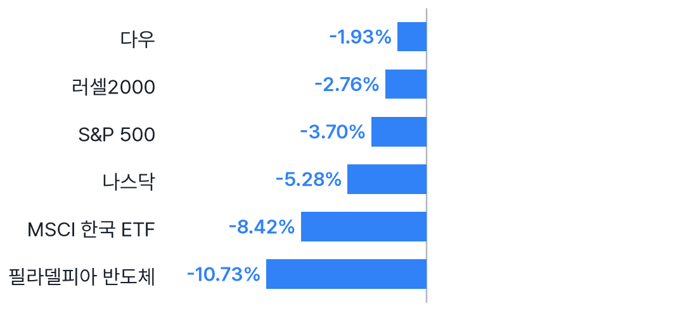
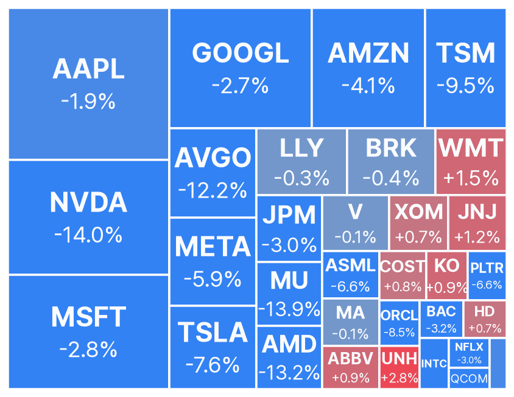
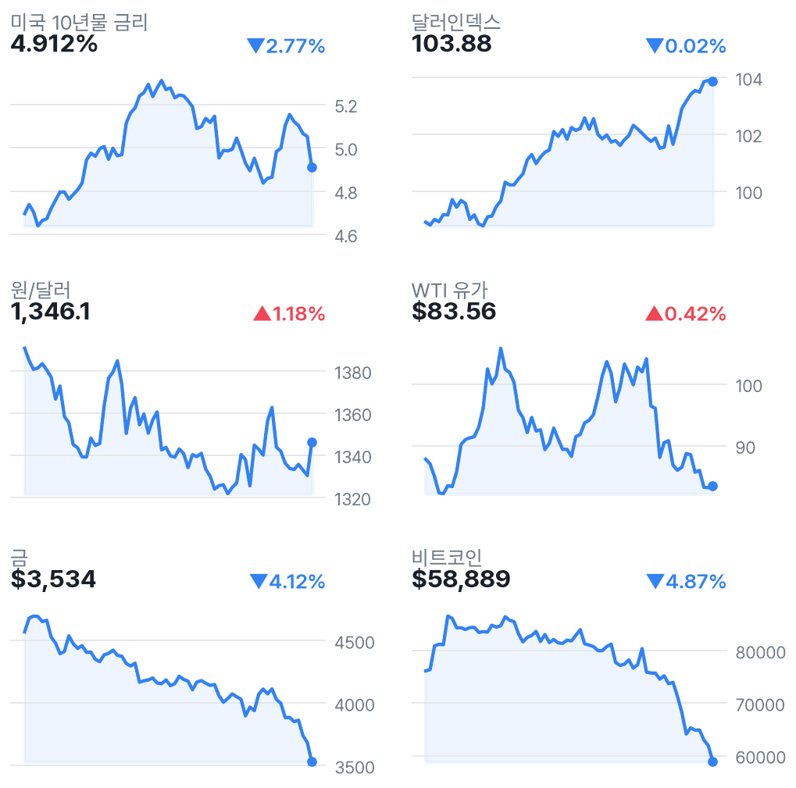
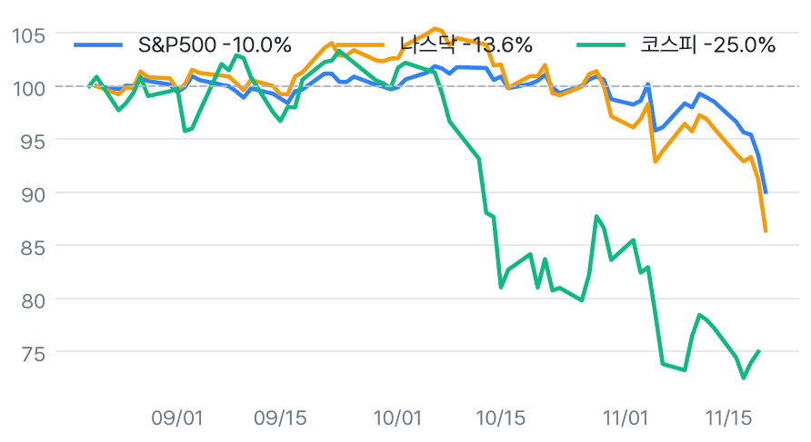

나스닥 5.28%↓, AI 투자 수익성 우려에 반도체 급락
✅ 핵심 요약
- 앤스로픽 상장 후 급락, 엔비디아 −14.01%·필라델피아 반도체 −10.73%.
- 미 10년물 금리는 4.912%로 하락했지만 VIX는 35.89로 상승.
- 코스피 −5.21% 마감 뒤 미국 상장 한국 ETF(EWY) −8.42%·원/달러 +1.18%.
- 주간: S&P 500 −8.61%·나스닥 −10.02%·필라델피아 반도체 −17.13%.
📊 주요 지표
S&P 500
6,910.39
▼3.70%
나스닥
22,617.73
▼5.28%
다우
48,147.33
▼1.93%
필라델피아 반도체
8,408.59
▼10.73%
VIX
35.89
▲26.20%
미국 10년물
4.912%
▼2.77%
원/달러
1,346.1
▲1.18%
달러인덱스
103.88
▼0.02%
WTI
$83.56
▲0.42%
금
$3,534
▼4.12%
비트코인
$58,889
▼4.87%
EWY(한국 ETF)
$123.26
▼8.42%
🧭 시장 해석
엔비디아의 호실적에도 AI 인프라 투자 비용을 회수할 수 있느냐는 우려가 가라앉지 않았다. 앤스로픽은 상장 이튿날 공모가 부근으로 밀렸고, 엔비디아·마이크론·브로드컴이 동반 급락했다. 미 국채 금리가 내린 반면 VIX는 뛰었고, 필수소비재 ETF는 0.67% 올랐다.
국내 증시는 토요일 휴장이다. EWY 하락폭이 월요일 코스피 하락폭을 예고하는 것은 아니다. 금요일 국내 증시가 이미 급락한 만큼, 월요일에는 원/달러 상승세와 외국인의 반도체 순매도가 이어지는지 확인할 필요가 있다.
금리가 내려도 기술주는 급락
미 10년물 금리가 낮아졌는데도 기술 ETF(XLK)는 7.27% 하락했다. 금리 상승보다는 AI 투자 수익성에 대한 의구심이 이날 기술주에 더 큰 부담으로 작용한 것으로 보인다.
📈 차트
미국 주요 지수 등락률

2026-11-20 미국 정규장 종가 기준 · EWY는 코스피 선행 지표로 참고
미국 빅테크·대형주 히트맵

타일 크기 = 시가총액, 색 = 등락률 (빨강 상승 · 파랑 하락)
미국 섹터 ETF 등락률

SPDR 섹터 ETF + 반도체(SMH)
금리·환율·원자재 (3개월)

우측 상단 = 전일 대비
3개월 추세 비교 (시작=100)

미국 vs 한국 지수 흐름
🏦 애널리스트 · 리서치
- TSLA — HSBC, 비중축소→보유·목표가 $157→$359의견을 높였지만 테슬라는 기술주 동반 약세 속 7.64% 하락했다.
- UNH — TD Cowen, 보유→매수·목표가 $402→$455의견 상향이 나온 날 유나이티드헬스는 2.84% 올랐다.
- WMT — TD Cowen, 매수 유지·목표가 $125→$147복수 증권사가 목표가를 높였고 월마트는 1.52% 상승했다.
-
키움증권은 4분기 실적이 시장 기대에 못 미칠 것으로 봤다.
미국 대형주 의견·목표가 변경 15건 (Yahoo)
- 의견 상향TSLA · HSBCReduce → Hold · 목표가 $157 → $359 · 11/20 21:38 KST
- 의견 상향UNH · TD CowenHold → Buy · 목표가 $402 → $455 · 11/20 23:17 KST
- 의견 하향BRK-B · Argus ResearchBuy → Hold · 11/21 00:42 KST
- 목표가 상향AMZN · OppenheimerOutperform · 목표가 $285 → $310 · 11/20 22:46 KST
- 목표가 상향JNJ · JP MorganNeutral · 목표가 $285 → $300 · 11/21 02:36 KST
- 목표가 상향WMT · Telsey Advisory GroupOutperform · 목표가 $130 → $145 · 11/21 04:36 KST
- 목표가 상향WMT · JefferiesBuy · 목표가 $120 → $145 · 11/21 03:58 KST
- 목표가 상향WMT · Raymond JamesOutperform · 목표가 $130 → $140 · 11/21 02:56 KST
- 목표가 상향WMT · B of A SecuritiesBuy · 목표가 $139 → $141 · 11/21 02:43 KST
- 목표가 상향WMT · TD CowenBuy · 목표가 $125 → $147 · 11/20 23:45 KST
- 목표가 상향WMT · Truist SecuritiesBuy · 목표가 $114 → $134 · 11/20 23:36 KST
- 목표가 상향WMT · Evercore ISI GroupOutperform · 목표가 $130 → $135 · 11/20 23:22 KST
- 목표가 상향WMT · KeybancOverweight · 목표가 $135 → $145 · 11/20 23:09 KST
- 목표가 상향WMT · Piper SandlerOverweight · 목표가 $128 → $138 · 11/20 22:23 KST
- 목표가 상향WMT · Morgan StanleyOverweight · 목표가 $125 → $135 · 11/20 22:02 KST
국내 종목분석 리포트 21건 (네이버 리서치)
-
유진투자증권 · 2026-11-20
-
한화투자증권 · 2026-11-20
-
교보증권 · 2026-11-20
-
교보증권 · 2026-11-20
-
교보증권 · 2026-11-20
-
교보증권 · 2026-11-20
-
하나증권 · 2026-11-20
-
유안타증권 · 2026-11-20
-
대신증권 · 2026-11-20
-
대신증권 · 2026-11-20
-
대신증권 · 2026-11-20
-
SK증권 · 2026-11-20
-
키움증권 · 2026-11-20
-
신한투자증권 · 2026-11-20
-
키움증권 · 2026-11-20
-
키움증권 · 2026-11-20
-
키움증권 · 2026-11-20
-
IBK투자증권 · 2026-11-20
-
서울평가정보 · 2026-11-20
-
서울평가정보 · 2026-11-20
-
NICE평가정보 · 2026-11-20
국내 투자전략 리포트 8건 (네이버 리서치)
-
신한투자증권 · 2026-11-20
-
유안타증권 · 2026-11-20
-
유안타증권 · 2026-11-20
-
대신증권 · 2026-11-20
-
하나증권 · 2026-11-20
-
신한투자증권 · 2026-11-20
-
신한투자증권 · 2026-11-20
-
키움증권 · 2026-11-20
국내 시황정보 리포트 8건 (네이버 리서치)
-
신한투자증권 · 2026-11-20
-
신한투자증권 · 2026-11-20
-
다올투자증권 · 2026-11-20
-
유안타증권 · 2026-11-20
-
유안타증권 · 2026-11-20
-
유안타증권 · 2026-11-20
-
신한투자증권 · 2026-11-20
-
유진투자증권 · 2026-11-20
국내 경제분석 리포트 3건 (네이버 리서치)
-
다올투자증권 · 2026-11-20
-
키움증권 · 2026-11-20
-
키움증권 · 2026-11-20
📰 주요 뉴스
-
반도체에서 미국 증시 전반으로 매도세가 번졌다.CNBC
-
대형 AI 상장도 투자심리를 돌려세우지 못했다.MarketWatch
-
실적 호조에도 반도체 대표주의 하락세가 이어졌다.CNBC
-
한국 증시는 뉴욕장 급락에 앞서 이미 큰 폭으로 밀렸다.파이낸셜뉴스
미국·글로벌 헤드라인 18건
-
MarketWatch · 11/21 06:58
-
WSJ Markets · 11/21 06:50
-
MarketWatch · 11/21 06:39
-
MarketWatch · 11/21 06:39
-
NBC News · 11/21 06:37
-
MarketWatch · 11/21 06:36
-
CNBC · 11/21 06:35
-
MarketWatch · 11/21 06:34
-
WSJ Markets · 11/21 06:27
-
NBC News · 11/21 06:26
-
MarketWatch · 11/21 06:25
-
Yahoo Finance · 11/21 06:23
-
CNBC · 11/21 06:23
-
Bloomberg.com · 11/21 06:15
-
Kiplinger · 11/21 06:12
-
The Washington Post · 11/21 06:07
-
CNBC · 11/21 06:03
-
WSJ Markets · 11/21 06:03
국내 헤드라인 18건
-
KB Think · 11/21 06:51
-
뉴시안 · 11/21 06:48
-
뉴스투데이 · 11/21 06:45
-
연합뉴스 · 11/21 06:33
-
Chosunbiz · 11/21 06:32
-
글로벌이코노믹 · 11/21 06:24
-
매일경제 · 11/21 06:24
-
연합인포맥스 · 11/21 06:10
-
매일경제 · 11/21 06:09
-
서울파이낸스 · 11/21 06:06
-
뉴스핌 · 11/21 06:05
-
이투데이 · 11/21 06:05
-
파이낸셜뉴스 · 11/21 06:01
-
연합뉴스 · 11/21 06:00
-
연합뉴스 · 11/21 06:00
-
뉴데일리 · 11/21 05:34
-
파이낸셜뉴스 · 11/21 05:00
-
연합인포맥스 · 11/21 04:41
애널리스트 관련 헤드라인 12건
-
TradingView · 11/21 04:20
-
TradingView · 11/21 04:20
-
TradingView · 11/21 04:20
-
Benzinga · 11/21 02:13
-
Benzinga · 11/21 02:07
-
Benzinga · 11/21 02:01
-
Investing.com · 11/21 01:10
-
StreetInsider · 11/21 00:59
-
Yahoo Finance · 11/21 00:30
-
Benzinga · 11/20 22:59
-
Quantisnow · 11/20 22:55
-
Quantisnow · 11/20 21:45
🗓️ 일정
경제지표·이벤트 (KST)
- 00:00🇺🇸 미국 Revised UoM Consumer Sentiment11/21 · 중요도 중간 · 예상 51.7 · 이전 51.0
- 00:00🇺🇸 미국 Revised UoM Inflation Expectations11/21 · 중요도 중간 · 이전 4.3%
- 02:00🇺🇸 미국 President Trump Speaks11/21 · 중요도 중간
다음 미국 세션 실적 예정
- HPE Hewlett Packard Enterprise Company장후시총 $60.4B · EPS 예상 $1.18
- A Agilent Technologies, Inc.장후시총 $49.4B · EPS 예상 $1.72
- TCOM Trip.com Group Limited시간미정시총 $26.6B · EPS 예상 $1.07
- ZM Zoom Communications, Inc.장후시총 $24.5B · EPS 예상 $1
- SYM Symbotic Inc.장후시총 $20.1B · EPS 예상 $0.08
👀 체크포인트
- 11/23(월) 국내 개장원/달러와 삼성전자·SK하이닉스 외국인 수급
- 11/23(월) 밤미국 개장 후 반도체 매도세와 VIX 진정 여부
- 11/24(화) 아침미국 장후 HPE 실적: AI 서버 주문과 수익성